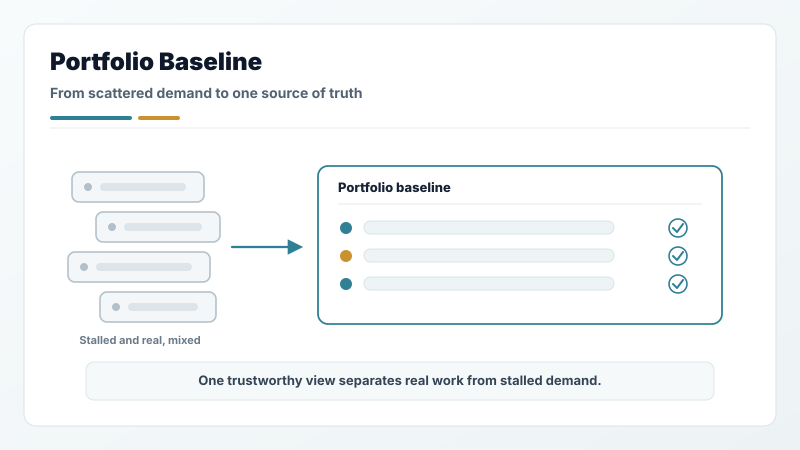
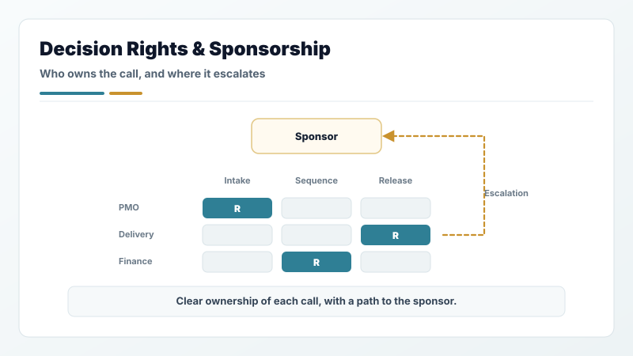
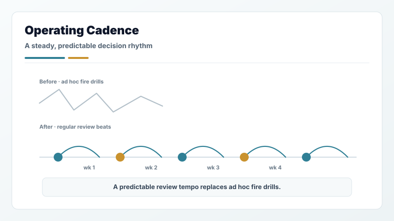
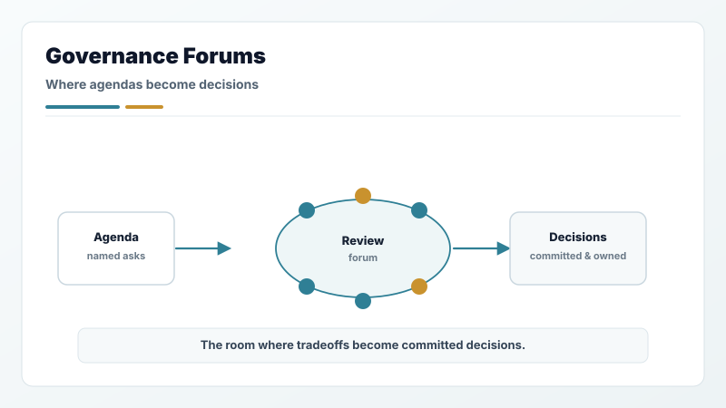
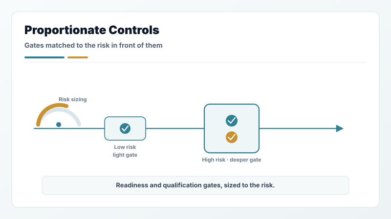
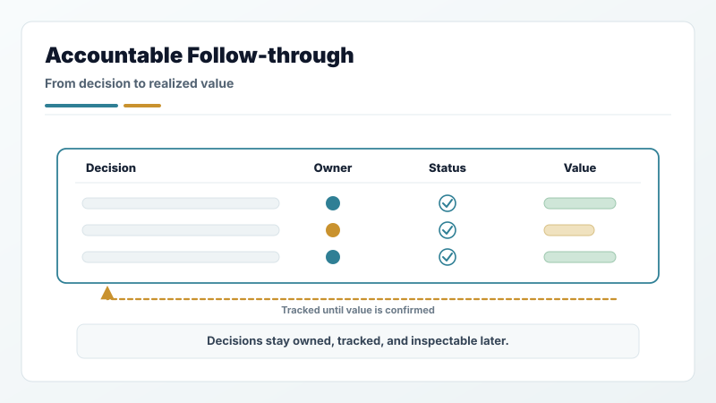

1. Portfolio baseline
One trustworthy source of what exists, who owns it, and what state it is in — separating real in-flight work from stalled demand so the rest of the system reviews facts, not advocacy.
PMO operating model
Stand up or reshape a PMO around decision rights, operating cadence, governance forums, proportionate controls, and accountable follow-through — so leaders run the portfolio on a system, not on memory.
What this is
Most PMOs that struggle are reporting layers bolted on after the fact: they collect status but cannot move a decision. The operating layer is the connective tissue that turns scattered demand, unclear ownership, and hidden tradeoffs into a portfolio leaders can actually steer — where every initiative has an owner, every decision has a record, and readiness is inspected before it is accepted.
I stand these up from nothing and reshape the ones that have drifted. For PMO Manager, Program Manager, and Portfolio Manager roles, the point is not more process. It is the least structure that lets executives commit against real capacity and real evidence. See the full Program, Project, PMO, and Portfolio Manager role fit.
Not a heavier reporting cycle, a new tool rollout, or a control for its own sake. The operating layer adds structure only where a decision would otherwise be made blind.
The operating layer
Each part is a decision surface, not a document. Together they let a leader see what is real, decide with evidence, and trust that the decision will hold.

One trustworthy source of what exists, who owns it, and what state it is in — separating real in-flight work from stalled demand so the rest of the system reviews facts, not advocacy.

Clear ownership of which call belongs to whom, where escalation goes, and which sponsor is accountable — so work stops stalling between people who each assume someone else decides.

The review rhythm leaders actually run against: what gets inspected, how often, and with what evidence — replacing ad hoc fire drills with a predictable decision tempo.

The councils and review bodies where tradeoffs become decisions, with agendas built around named asks instead of general status — the room where capital and capacity get committed.

Readiness gates, qualification gates, and audit controls sized to the risk in front of them — enough to catch real exposure, light enough that teams do not route around them.

Decision logs, owner registers, and value tracking that keep a commitment alive after the meeting — so decisions are inspectable later and re-litigation drops.
How I build or reshape it
The sequence matters: decision rights and a clean baseline come before cadence, and cadence before controls. Installing controls on top of an unclear baseline is how PMOs become the thing teams avoid.
Find where decisions actually stall: missing ownership, stale signal, forums with no decision rights, controls no one trusts. Name the few gaps that block everything downstream.
Establish who owns which call and stand up one trustworthy portfolio view. This is the foundation every later move plugs into — the first enterprise baseline where there was none.
Put in the review rhythm, the decision forums, and the readiness and qualification gates — sized to risk so they accelerate good work instead of taxing it.
Connect decision records, owner accountability, and value tracking, then transfer the running of it so the operating layer holds after I step out — not only while I am in the room.
Where I have built this
The same discipline, stood up across enterprise software, telecom, SaaS, and energy — under CIO, CFO, CTO, and COO sponsorship.
Stood up the first CIO/CFO/COO governance council and PPMO across 500–700 initiatives during pre-IPO hypergrowth, with a durable decision log that cut re-litigation.
Read case study →Reconstructed governance across a ~500-initiative revenue technology portfolio, cutting delivery cycle time 65% (340 to 120 days) with readiness gates and no added headcount.
Read case study →Unified eight Software Assurance programs under one governance structure, tying ~$18.5B in contract exposure to partner audit, anomaly thresholds, and Finance/Legal controls.
Read case study →Built a CTO-sponsored hybrid waterfall-to-agile operating model giving leaders one decision-ready view of risk, milestones, and dependencies across ~$125M in capital-coupled work.
Read case study →Built a first structured R&D portfolio model amid organizational ambiguity — a weighted evaluation model that persisted after the engagement closed, without standing PMO support.
Read case study →Instituted pre-UAT governance on revenue-impacting finance systems, cutting validation cycles from 6–9 months to 30–45 days while protecting audit defensibility.
Read case study →Inspect the mechanics
This page is the model. The walkthroughs show how work moves through it step by step, and the workflow modules are the reusable assets that operationalize each part — intake, scoring, charters, readiness, controls, and value follow-through.